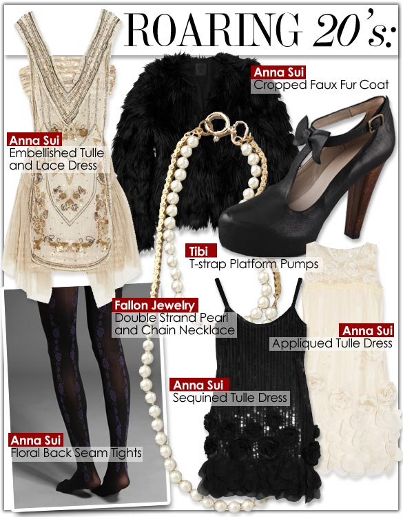
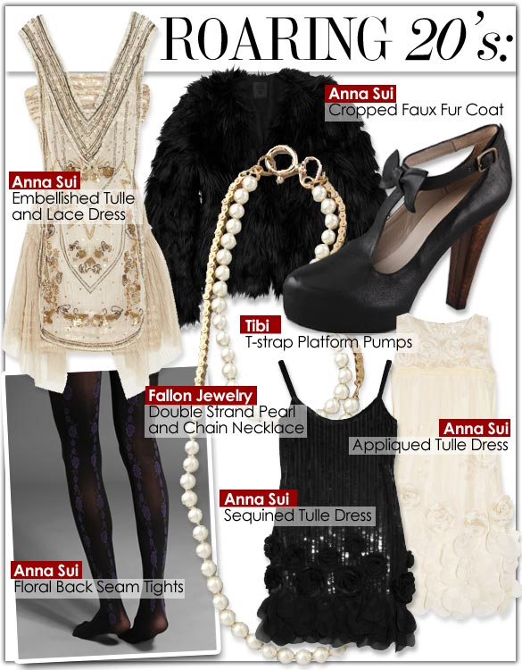
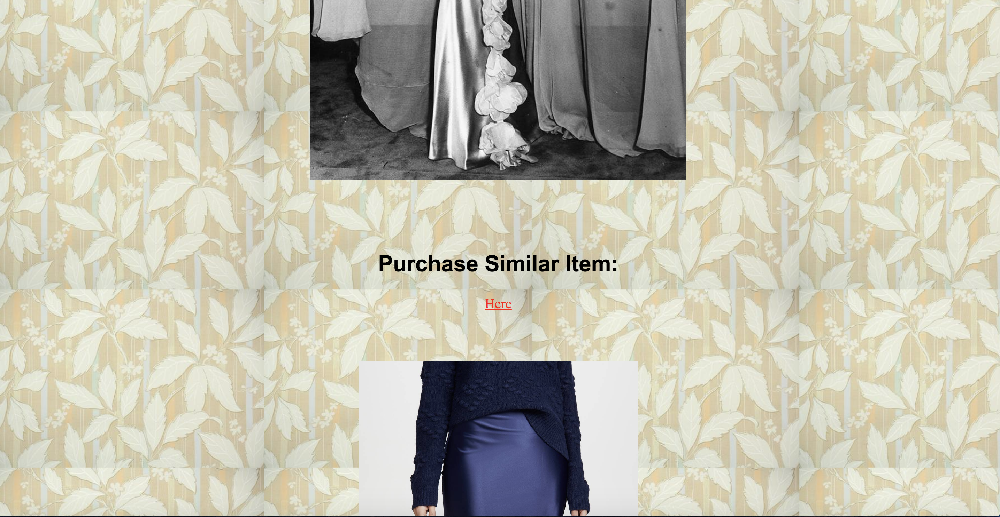
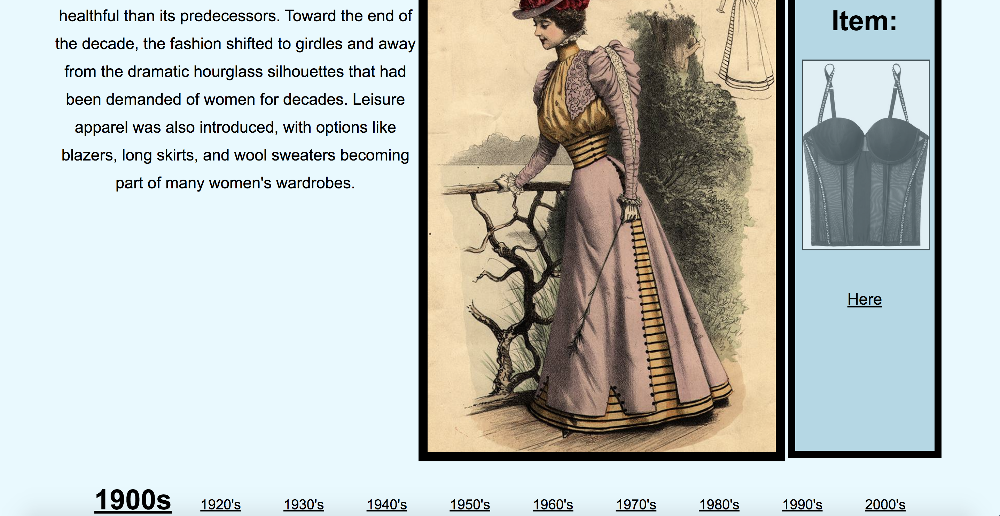
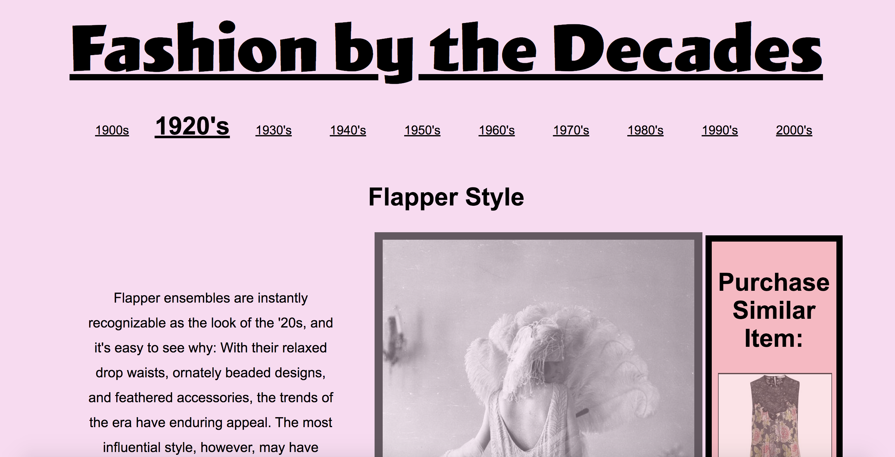
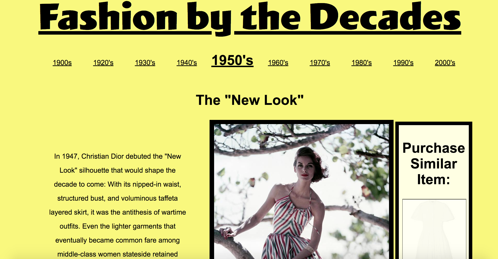
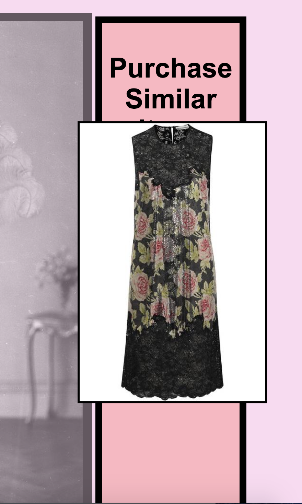
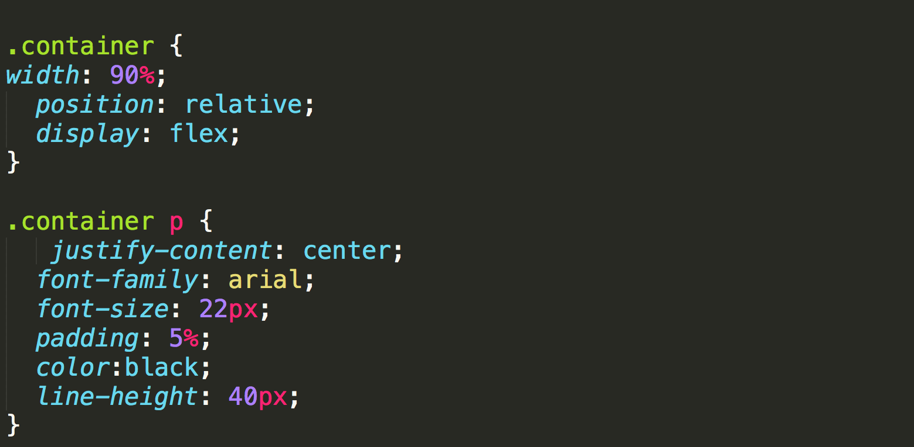

Html Prose Documentation
In the intervening years, there have been major shifts in technology, politics, culture, and social norms, and fashion has reflected that in its ever-changing cycle of trends.
From the sky-high platforms of the '70s to the high-waisted bikinis of the '40s, we see plenty of the popular looks of decades past serving as inspiration for designers today.
The Form is created on the basis of a timeline filtering through decades of clothing styles and a feasible option of clothing to replicate the trendy look.
The function is to serve as a gallery featuring popular fashion trends during each decade.
Each Decade gives you a brief description of the fashion trends occuring at that time, and the significance of the clothing style.
Inspiration
 

Design Process
Layouts: Before creating my designs and typing them out in code, i created layouts of how my screens would look and designs of integrating the text and images from my html prose in it.
Excution 1

When i firsted coded my layouts, there were alot of elements that werent complimenting eachother. My biggest challenge was figuring out how layouts work with code.
User Testing
During One of our classes, i did a user test of my first attempt website to visualize and problem solve interactivity.
-The feedback i received was:
-Distracting Background.
-Lengthy Scrolling
-Navigation at the end, for easier usability.
I added a navigation to the bottom of the page as per feedback but still wasnt satisfied with my layout structure. I decided to experiment more and try to overcome my challenges.
Excution 2 - Final
I created a layout that represented the style and structure of a lookbook, pages that flip through a timeline of decades, showcasing fashion style still prevelent and trending today. Through my website, i want users to be able to find their year of style and catch the modern trending alternative at a cheaper price.
    
Challenges
My biggest challenges were
- Creating dynamic layouts that vary in pastel colors.
- Trying to find a middle ground for complimenting old and New trending fashion with colours and style.
- Centering Elements.
Learnings
- I Learned how to integrate media into the project.
- How layout and structure and accessibility is an important tool for user navigation and interaction.
- How hover states could be used in multiple ways. (to change layouts, structures,size and color).
- Inspiration from historic and current design precedents helped me contextualize my work.
- The importance of typography to create usability, consistency and facilitate orientation.